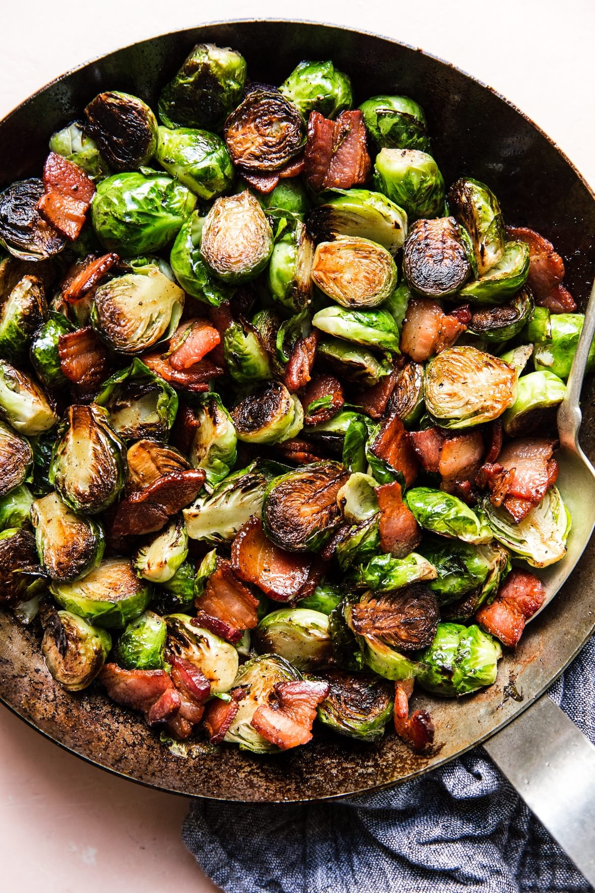

Maple Bacon Brussels Sprouts

Description
Remember how everyone thinks green bean casserole is a holiday staple? Well, make way as we have a new contender!
This maple bacon recipe will have everyone saying something never heard before... "More brussels sprouts please!"
Ingredients
- 8 slices of thick-cut bacon, chopped
- 2 lbs. Brussels Sprouts (rinsed and halved)
- 1 tsp. Salt
- 1/4 cup Maple Syrup
Steps
- In a large skillet, cook the bacon over medium-high for 6-8 minutes or until crispy.
Using a slotted spoon, remove the bacon and let cool and drain/dry.
- Add the brussels sprouts to the skillet, stirring well to coat them with the bacon grease.
Reduce heat to medium and let cook for 6 minutes or until sprouts start to brown/caramelize.
- Stir in the salt and continue to cook for an additional 6-8 minutes or until sprouts are just tender.
Add water to steam and soften the brussels sprouts if needed.
- Stir in the maple syrup. Cook 3 minutes, stirring to coat. Add the cooked bacon and stir to combine.
Notes:
- We prefer to use a griddle to cook bacon since we know it has even heating and the bacon can lay flat.